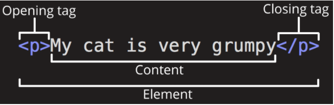

In this article we cover the absolute basics of HTML. To get you started, this article defines elements, attributes, and all the other important terms you may have heard. It also explains where these fit into HTML. You will learn how HTML elements are structured, how a typical HTML page is structured, and other important basic language features. Along the way, there will be an opportunity to play with HTML too!
| Objective | To gain basic familiarity with HTML, and practice writing a few HTML elements. |
| Prerequisite | Basic computer literacy, basic software installed, and basic knowledge of working with files. |
HTML (Hypertext Markup Language) is not a programming language. It is a markup language that tells web browsers how to structure the web pages you visit. It can be as complicated or as simple as the web developer wants it to be. HTML consists of a series of elements, which you use to enclose, wrap, or mark up different parts of content to make it appear or act in a certain way. The enclosing tags can make content into a hyperlink to connect to another page, italicize words, and so on.
For example, consider the following line of text:
My cat is very grumpy.
If we wanted the text to stand by itself, we could specify that it is a paragraph by enclosing it in a paragraph (<p>) element:
<p>My cat is very grumpy.</p>
Let's further explore our paragraph element from the previous section:
The anatomy of our element is:
- The opening tag: This consists of the name of the element (in this example, p for paragraph), wrapped in opening and closing angle brackets. This opening tag marks where the element begins or starts to take effect. In this example, it precedes the start of the paragraph text.
- The content:This is the content of the element. In this example, it is the paragraph text.
- The closing tag:This is the same as the opening tag, except that it includes a forward slash before the element name. This marks where the element ends. Failing to include a closing tag is a common beginner error that can produce peculiar results.
Elements can be placed within other elements. This is called nesting. If we wanted to state that our cat is very grumpy, we could wrap the word very in a <strong> element, which means that the word is to have strong(er) text formatting:
<p>My cat is <strong>very</strong> grumpy.</p>
There is a right and wrong way to do nesting. In the example above, we opened the p element first, then opened the strong element. For proper nesting, we should close the strong element first, before closing the p.
The following is an example of the wrong way to do nesting:
<p>My cat is <strong>very grumpy.</p></strong>
The tags have to open and close in a way that they are inside or outside one another. With the kind of overlap in the example above, the browser has to guess at your intent. This kind of guessing can result in unexpected results.
There are two important categories of elements to know in HTML: block-level elements and inline elements.
- Block-level elements form a visible block on a page. A block-level element appears on a new line following the content that precedes it. Any content that follows a block-level element also appears on a new line. Block-level elements are usually structural elements on the page. For example, a block-level element might represent headings, paragraphs, lists, navigation menus, or footers. A block-level element wouldn't be nested inside an inline element, but it might be nested inside another block-level element.
- Inline elements are contained within block-level elements, and surround only small parts of the document’s content (not entire paragraphs or groupings of content). An inline element will not cause a new line to appear in the document. It is typically used with text, for example an <a> element creates a hyperlink, and elements such as <em> or <strong> create emphasis.
Consider the following example:
<em>first</em><em>second</em><em>third</em>
<p>fourth</p><p>fifth</p><p>sixth</p>
<em> is an inline element. As you see below, the first three elements sit on the same line, with no space in between. On the other hand, <p> is a block-level element. Each p element appears on a new line, with space above and below. (The spacing is due to default CSS styling that the browser applies to paragraphs.)
firstsecondthird
fourth
fifth
sixth
All the documentation in this is page is taken from MDN.